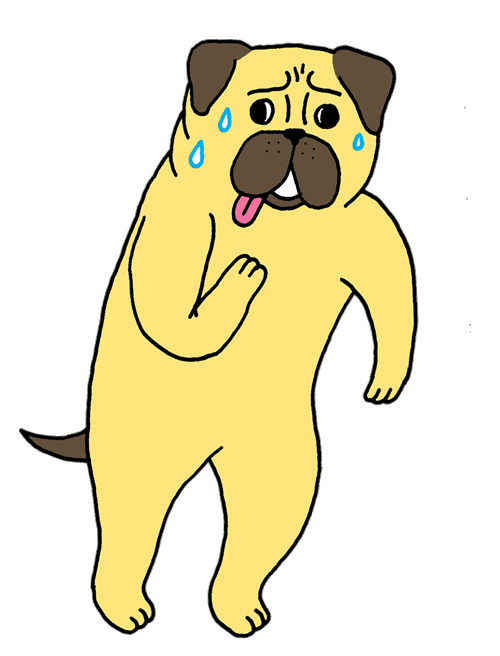

Add: Hi Vincy, thanks for your time to chat with me. I am going to ask you some questions about you and regarding to art and design, feel free to say whatever you like
Hi! Yeah sure no problem, I'm happy to help.
Add: Where do you locate currently?
I live and work in Hong Kong
Add: What do you do for living? Could you describe a day in your job?
I am an user experience designer by day, and I do illustrations on the side, both for fun and for commissions. I worked in a local company in Hong Kong as an in-house UX designer, my daily work consists of making wireframes and creating assets for the company's websites. I am also in charge of making the UI guidelines for the company's expanding web applications.
After work I do illustrations and drawings in my free time to compensate for the creativity I didn't get to use for my day job. Coming from an illustration background, I wish I could spend more time on doing illustrations, but at the end of the day, going freelance on illustration is not sustainable for me to live in a city like Hong Kong.

Add: What are some of your habbits? Is there any relationship between your habits and your work?
I have the habits of looking at strangers on the street and observe their behaviors and how they carry themselves with their body language. Sometimes I draw them in my notepad very quickly. I think it helps me with figuring out how I want to communicate with people with my drawings.

Add: As an artist or designer, How would you describe yourself? What is your goal
I try to stay as open-minded as possible. Inspirations usually come from unexpected places.
I don't set goals for anything in my life, but if I have to set a goal as a person working in a creative field, it would be to convince people that everyone can be artists, and that there is nothing fancy about being designers or artist:-)
Add: From the scale of 0 to 5. How likely do you think people from the rest of the world understands designs in your area?
I would say around 2.
Add: Would you mind sharing your portfolio website if you have one?
Yeah of course, the link is
Add: Thank you! your portfolio is so cute and funny, I love it.
Thank you! great to hear
Add: What is your opinion about design/art in your area? What's special?
Illustrations is special because there are a lot of variations / possibilities to it. It's different from fine art which it's usually defined with different genre like realistic paintings, sculptures and mixed media etc. You cannot really put illustration in a box. Illustrations can be a lot of thing at the same time to me. For example, an illustration on a wall becomes a mural, when you make an illustration moves it becomes animation, when it's put on a card and packaging it becomes consumer goods. The possibility on how to use illustration is endless and that's the reason why I am attracted to it. People are immediately drawn to visually stimulating things and it makes direct conversation to whoever is looking at it.
Add: What are the bias you think people has toward designs in your hometown/location *
In terms of illustrations, I think people do not take it seriously. They might think illustrations are just doodles and there is nothing deep about it. In fact there are a lot of thoughts behind each stroke and color being used in each illustration.
Add: Do you get inspired by your culture? if so, how do you usually apply them in your work?
Rather than culture, I would say I am more inspired by surroundings and personal experiences. If i live in a different city I will be inspired by that city and how I experienced it.
Add: In your opinion, What's the biggest different about design trend between Western and Eastern culture?
I don't think I have the expertise to talk about that...but if I have to talk about it, here is my observation:
In Hong Kong in particular, I think people are less adventurous on experimenting on new designs and ideas, they will not do something unless it's proven to be successful. I think that's the mindset that has affected people on thinking how design can be done. It's more about how design should be, not how it could be.
I went over your website, i really like this illustration, what was it for?

It was for an article that was published on Willamette Week, talking about pug's health problems. Here's more gifs


Add: These are great! So Vincy, What else do you wish to let people from other areas know about designs and art in your area?
Use illustration wisely. Treat illustrators as a professionals like how you would treat architects and designers of other disciplines.
Add: Is there anything you would like me to know about you?
I love eating.
Add: Hahaha me too! It's my motivation for living!